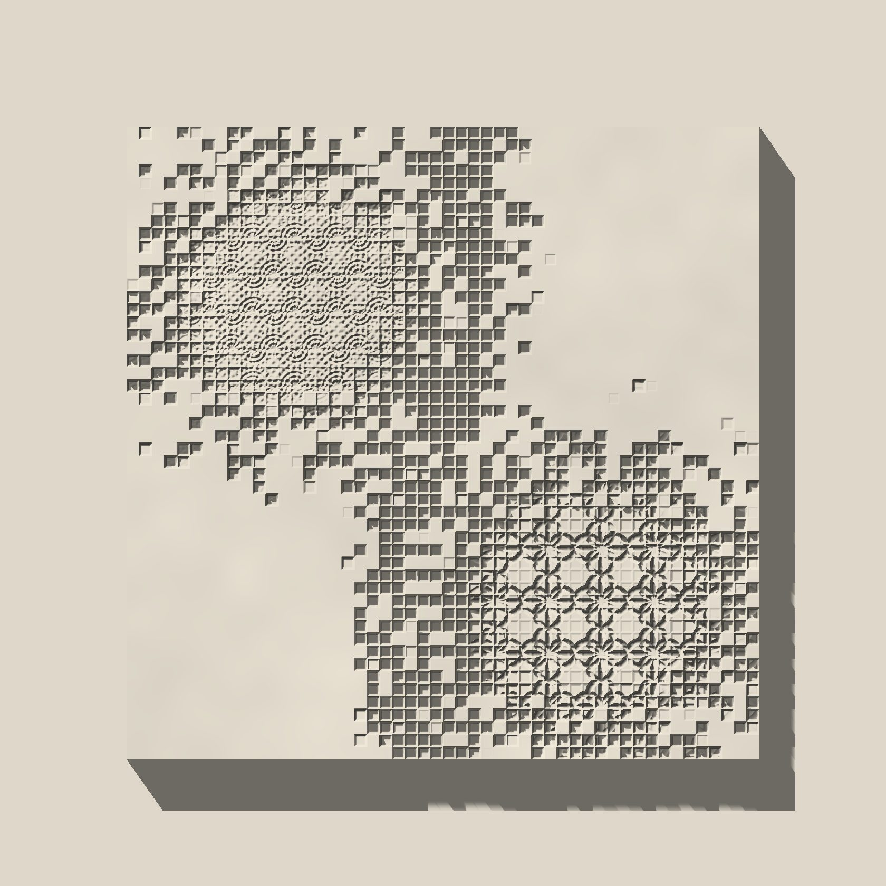
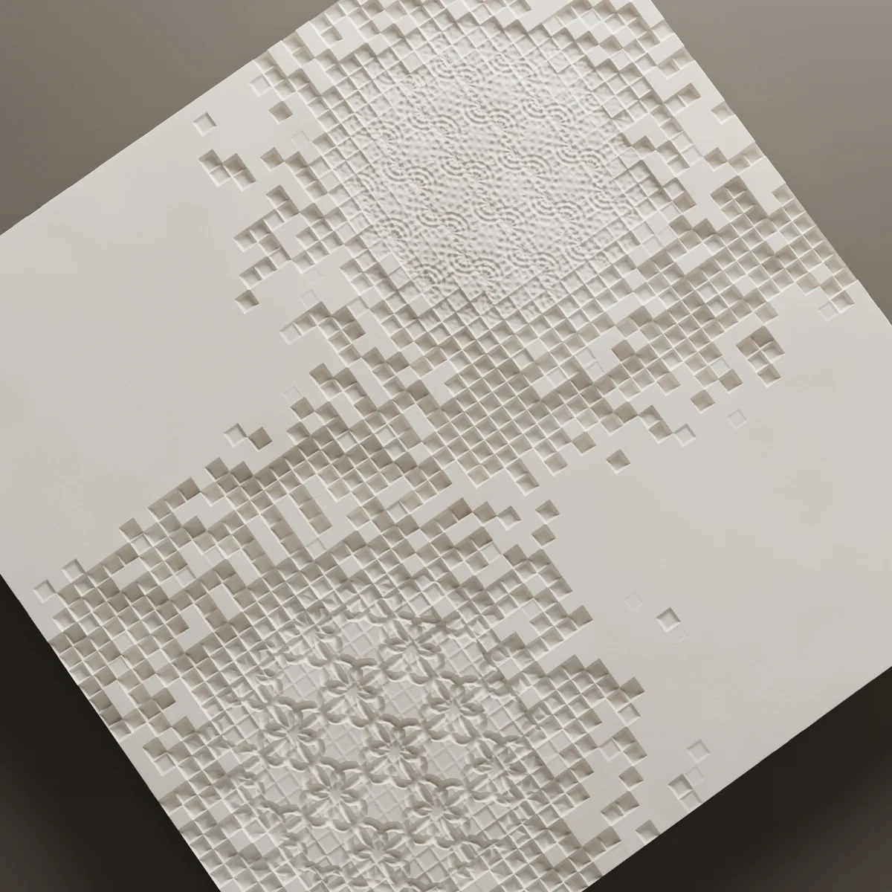
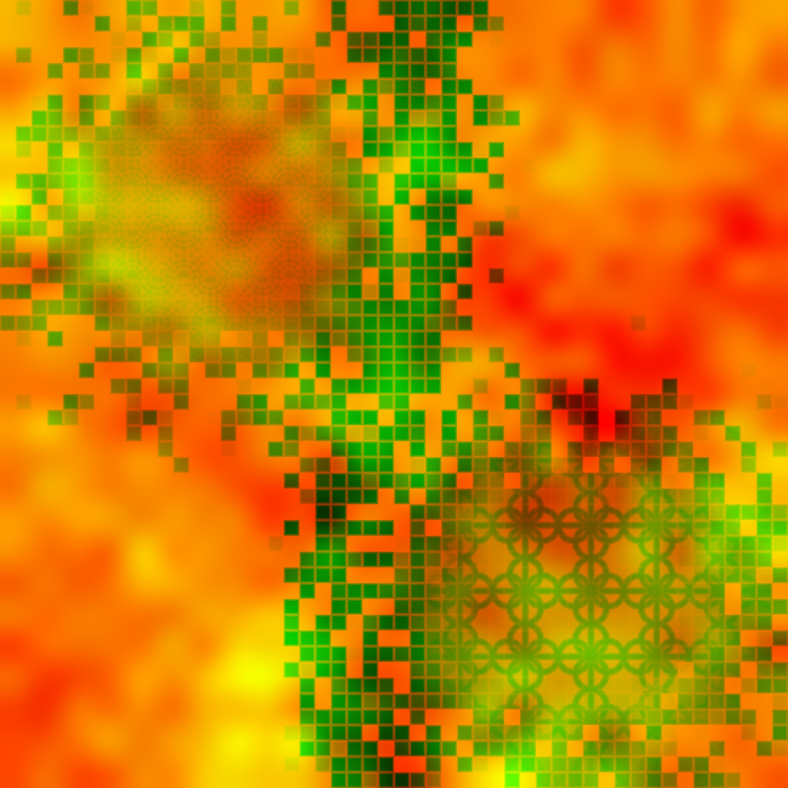

Mordent
A field of square cells that gathers into fine pattern at two points and scatters toward the edges. Composed as a single panel, with no repeat.

- Size
- 600 × 600 mm
- Relief
- 7 mm
- Layout
- Single panel
- Material
- Lumina PMAG™


The pattern
Mordent is a field of square cells. The cells gather at two points of the panel into a fine, close pattern; away from these two foci they thin out and scatter toward the edges. The pattern starts from a grid but does not read as one: the density itself builds the composition.
The relief is 7 mm deep. In the dense areas that depth gives a fine texture; in the sparse areas it leaves cells that can be read one by one.
How it reads in light
The image at the top of the page is in live light. As the angle of the light changes, the two dense areas are stressed differently; at some angles only the foci show, at others the whole spread of cells. The panel stays the same while the surface you read changes with the light.
On the wall
Mordent is designed as a single 600 × 600 mm panel. Because its two foci and its thinning toward the edges are complete in themselves, it is not built to repeat side by side. It is meant as a wall piece on its own, or as a finely textured accent on a plain surface. Its two foci can be placed to eye level, or to another element of the wall such as a door or a light; that is a detail decided together on the layout drawing.
To see how this system would sit on your wall, send the wall dimensions.